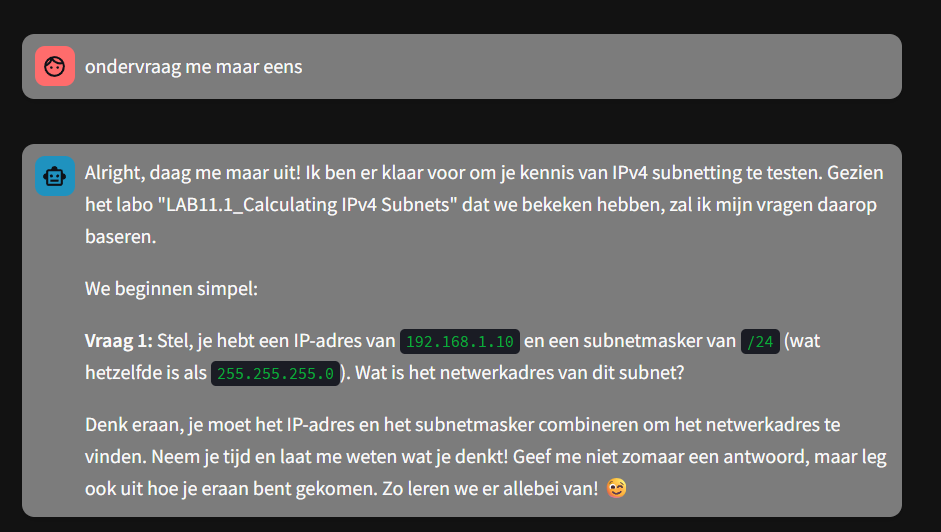

PandaAI
PandaAI is a project page for an AI-focused build where the goal is to show the idea, the approach, and what was learned.

A practical AI designed to actually help students and to not stray of the intended path it was set on.
Overview
A project that actually is supposed to help students in the classroom, a teacher can add some material, PANDA then opens this, analyzes its contents and interprets it based on the student's questions. If need be the AI asks further questions, but never strays from its path. Designed to be low power, it can be run on a raspberry pi.
Background
PandaAI was the first real project we worked on for more than a week, and it was a great learning experience. Not only because of the number of technologies we discovered, but also because we learned how to work as a team, which was not always easy, especially since I had never really done that before. Luckily, we had a marketing bachelor student in the group, who turned out to be the best SCRUM leader we could have asked for. My main task was making sure the database worked correctly, while also giving feedback and handling some administration for PandaAI itself.
Technologies
- Python (programming language)
- Gemini API (LLM backbone)
- Cloudflare zero trust tunnel (secure access)
- Raspberry Pi (edge compute)
- Vercel (Online database)
- FastAPI (backend framework)
Key Takeaways
- Learning to work with a real team for an extended period
- Integrating a real API.
- Working with external databases effectively
- How hashes work